Featured Projects
Autonomous Navigation with Reinforcement Learning in NVIDIA Isaac Lab
Built a reinforcement learning simulation in NVIDIA Isaac Lab where a four-wheel vehicle uses LiDAR-based ray casting to navigate waypoints and avoid obstacles.
Trained with PPO via the RSL-RL framework to learn collision avoidance and path navigation in a physics-based simulation.
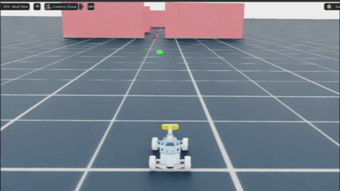
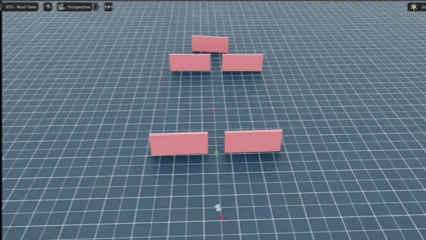
Violence Detection
Real-time violence detection system that classifies violent vs. non-violent actions using YOLO pose estimation and a custom CNN/Transformer model.
Includes dataset auditing, video preprocessing, model training, and a multi-stream inference client with configurable detection thresholds.
Viewer discretion advised. Click to reveal demo footage.
Violence detection test clips (safe for work until opened).Automatic License Plate Recognition System
End-to-end system that detects license plates in video with YOLO, crops them, and runs OCR with EasyOCR/PaddleOCR.
Separates detection and recognition into independent stages so each can be scaled or optimized separately.
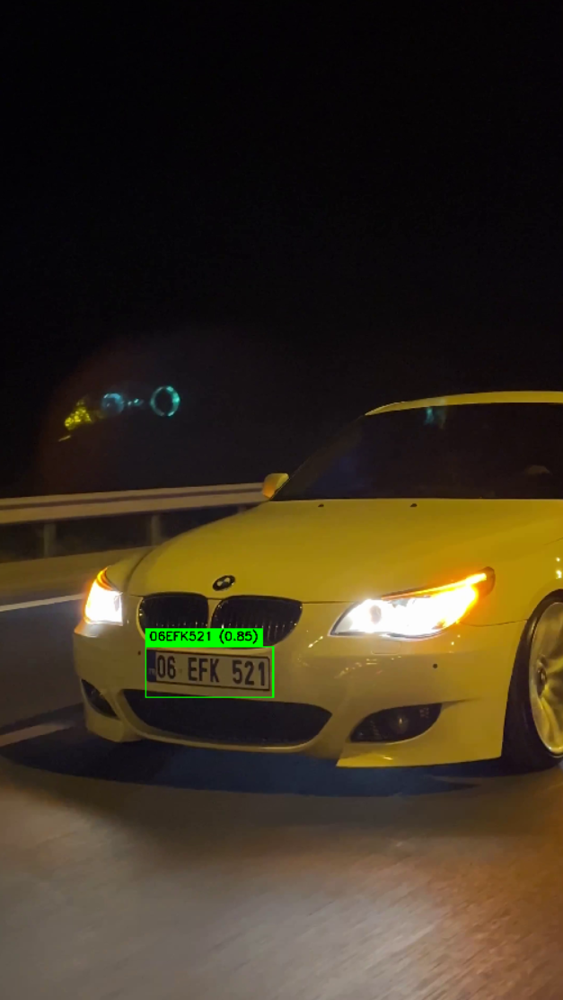
Real-Time Alphanumeric OCR with CNN
Lightweight CNN for real-time alphanumeric character recognition from camera streams.
Uses dual models for letters and digits that can be hot-swapped while the program is running.

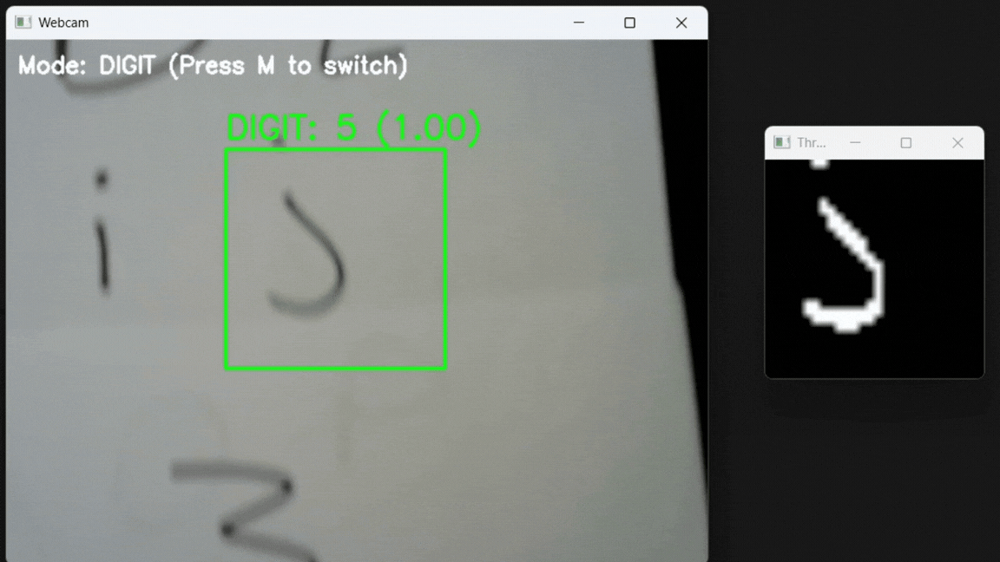
Full-Stack RSVP Management Platform
Production-ready RSVP workflow for event invitations with guest responses, party tracking, and a mobile-first frontend.
Backend uses Neon Postgres, Prisma, and secure API routes with an admin dashboard for live attendee stats.
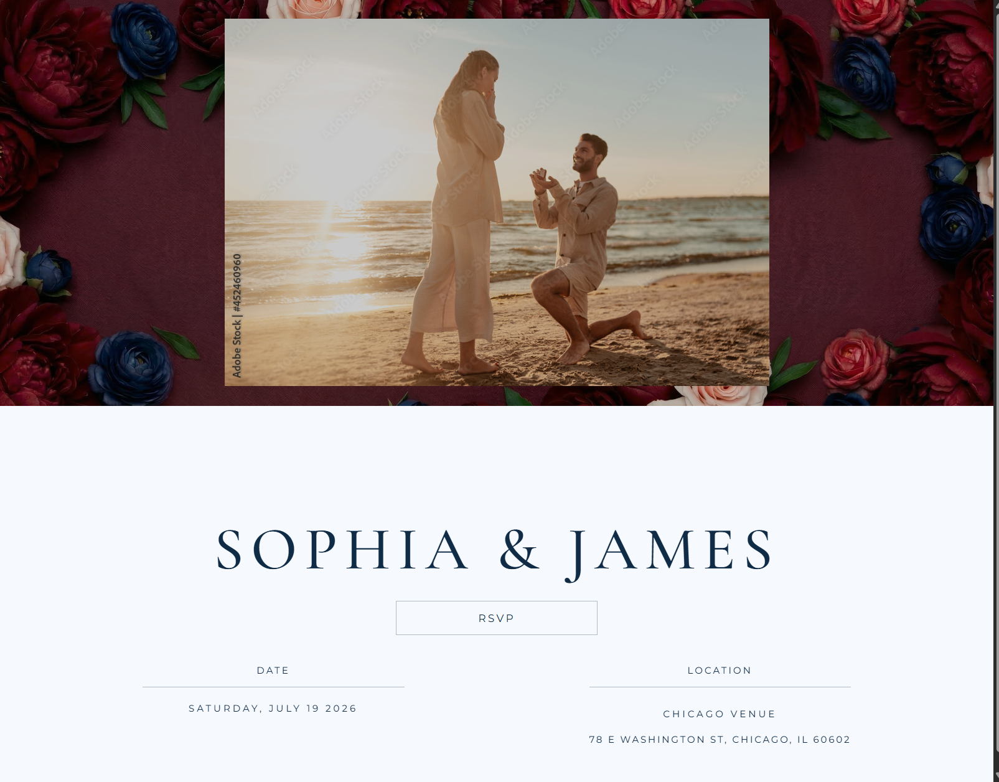
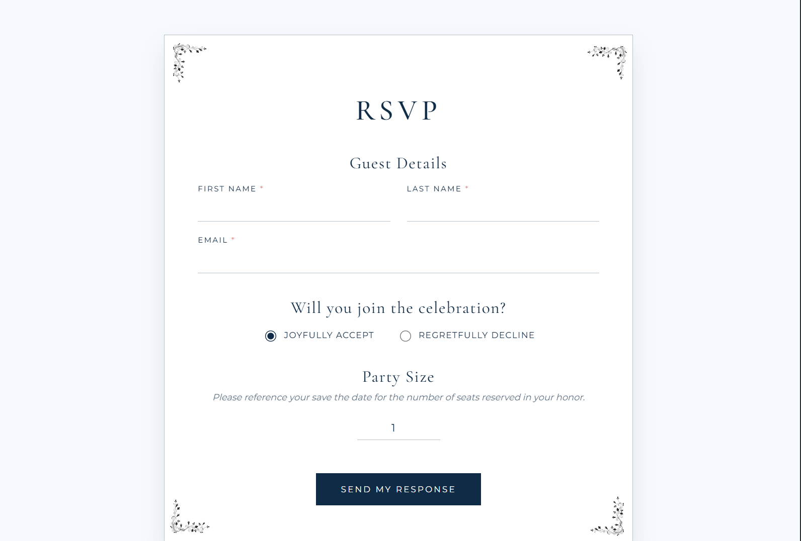
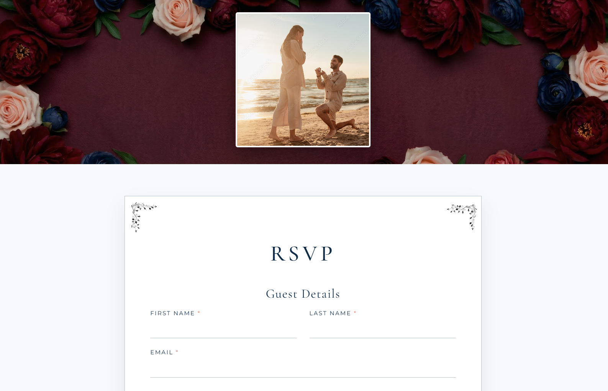
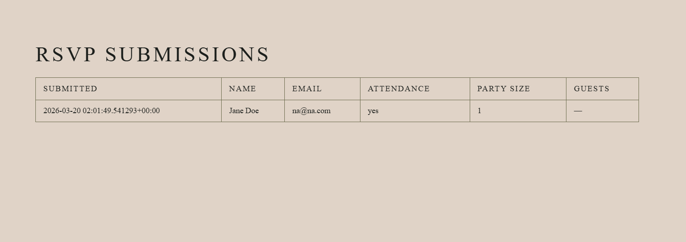
2D Multiplayer Tactical Shooter - Gunfight Engine
Real-time multiplayer tactical shooter built from scratch with a custom ECS game engine and a Java WebSocket server.
Serves a cross-platform HTML5/Canvas client at 60 TPS with matchmaking, projectile physics, line-of-sight, and mobile joystick controls.
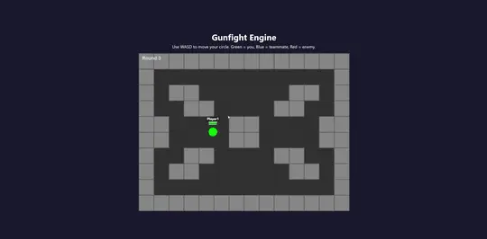
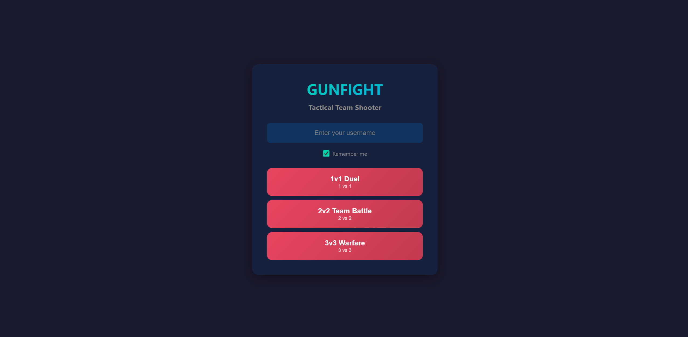
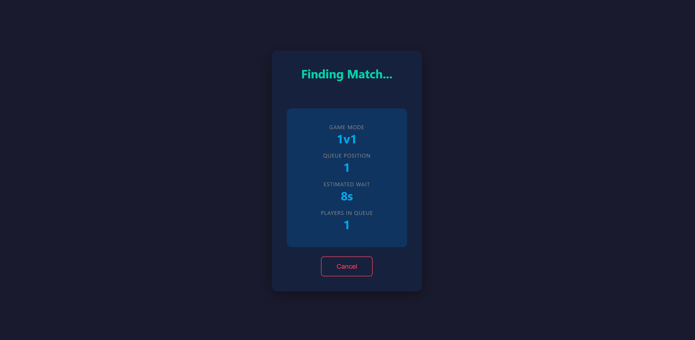
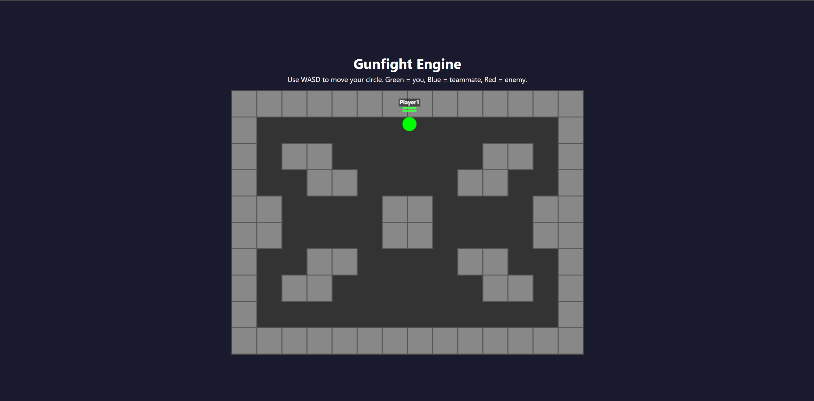
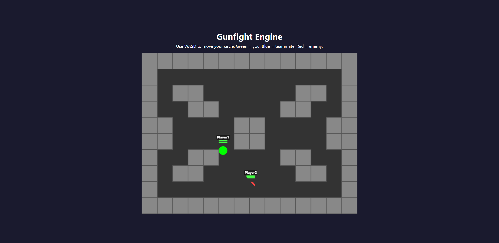